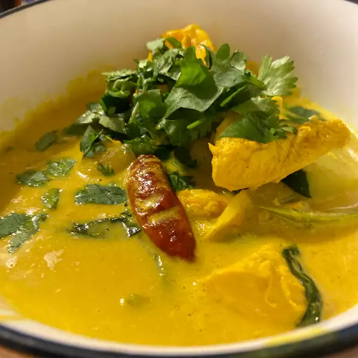

Return to Home
Green Curry

Description
A recipe of the Thai Green Curry, an emblematic dish from the Land of Smiles, adapted to the ingredients commonly found in the western world. This specific variation uses chicken, but it can be substituted with beef or pork.
Ingredients
For 5 persons:
- chicken (preferably legs for moist texture): 500g
- eggplants: 100g
- bamboo shoots: 200g
- carrots: 200g
- green curry paste: full pack
- coconut milk: full pack
- seasoning: fish sauce (Nam Pla), lime juice: to taste
Recommanded side dish: rice vermicelli (Khanom Chin). A more common alternative is Thai rice.
Directions
- Heat oil in a wok until it starts to shimmer. Add curry paste. Stir together and fry until fragrant, 2 to 3 minutes. Add chicken slices, stirring until coated. Cook until just slightly pink in the center, 3 to 5 minutes.
- While chicken is cooking, place bamboo shots, eggplants and carrots in a small saucepan, cover with water, and place over high heat. Bring to a boil. Drain then cover with water again.
- Pour coconut milk into the wok. Bring to a slow simmer, stirring occasionally, about 5 minutes. Drain vegetables and add in. Stir in fish sauce. Bring back up to a simmer and cook for 5 minutes.
- Remove curry from heat.